Items
Tools, materials, food and drink, medicine and blueprints.
Value is what an item is worth. Hull price is what a Hull vendor asks for it at a neutral reputation. Better Hull reputation brings prices down by 2% a point. Vendors pay more for the kind of thing they deal in.
Seeds, crops, animal products and cooked dishes are on the Farming page. Weapons and armour have their own pages.
Tools
Better tools gather faster and can work tougher materials. Watering cans come in three sizes: the small one holds 20 and waters one tile, the large holds 50 and waters three, and the biggest holds 90 and waters a 3 by 3 patch.
| Tool | Type | Tier | Value | Where to get it |
|---|---|---|---|---|
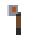 Rusty Hatchet | axe | 1 | 14 | Crafted at Workbench; Sold at Mags' General Store |
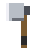 Woodcutter Axe | axe | 2 | 38 | Crafted at Forge; Sold at Tinkers' Guildhall |
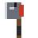 Chopper | axe | 3 | 90 | Crafted at Anvil |
| Watering Can | can | 1 | 14 | Crafted at Workbench; Sold at Mags' General Store |
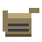 Large Watering Can | can | 1 | 40 | Crafted at Workbench; Sold at Mags' General Store |
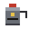 Pressure Can | can | 1 | 90 | Crafted at Forge; Sold at Tinkers' Guildhall |
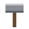 Hammer | hammer | 1 | 2 | Crafted at Workbench |
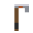 Hoe | hoe | 1 | 12 | Crafted at Workbench; Sold at Mags' General Store |
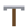 Rusty Pick | pickaxe | 1 | 14 | Crafted at Workbench; Sold at Mags' General Store |
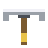 Miners Pick | pickaxe | 2 | 38 | Crafted at Forge; Sold at Tinkers' Guildhall |
| Drill Pick | pickaxe | 3 | 90 | Crafted at Anvil |
| Fishing Rod | rod | 1 | 16 | Crafted at Workbench; Sold at Mags' General Store |
Food and drink
| Item | Description | Effect | Value | Hull price | Where to get it |
|---|---|---|---|---|---|
| Berries | Eat for a little food. | +8 hunger, +2 thirst | 2 | 4 | Found in the world |
| Canned food | Eat for good food. | +30 hunger | 10 | 16 | Sold at Mags' General Store; Sold at Reclaimers' Lodge; Dropped by Ash Hound; Dropped by Gunner; Reward: A Roof and a Fire |
| Dirty Water | Irradiated. Drinks well, hurts later. | +30 thirst, +15 radiation | 2 | 4 | Found in the world |
| Fried Roach Egg | Fried clean. Not bad at all, if you do not think about it. | +26 hunger, +2 health | 14 | 23 | Crafted at Campfire |
| Glowfish | Raw, it carries a lot of radiation. Cook it. | +8 hunger, +12 radiation | 4 | 7 | Found in the world |
| Golden Carp | A rare catch. Eats fine, sells better. | +12 hunger, +3 radiation | 40 | 64 | Found in the world |
| Purified Water | The cleanest water you can get. Barely any radiation. | +45 thirst, +1 radiation | 8 | 13 | Sold at The Drip Apothecary; Sold at The Rusty Anchor |
| Raw Fish | A little food and a little radiation. Cook it. | +8 hunger, +5 radiation | 5 | 8 | Found in the world |
| Raw Meat | Eat it raw and you will feel it later. Cook it. | +14 hunger, +8 radiation | 4 | 7 | Dropped by Glowrat; Dropped by Ash Hound; Dropped by Stalker; Dropped by Bloater; Dropped by Spitter; Dropped by The Hollowclaw; Dropped by Wrack crab; Dropped by The Wrack Mother; Slaughtering a Twohead cow; Slaughtering a Roach hen |
| Roach Omelette | Eggs and beans in a pan. Proper food. | +54 hunger, +4 health | 38 | 61 | Crafted at Stove; Sold at The Rusty Anchor |
| Spring Water | Clean-ish. A little radiation. | +35 thirst, +4 radiation | 4 | 7 | Found in the world |
Medicine
| Item | Description | Effect | Value | Hull price | Where to get it |
|---|---|---|---|---|---|
| Bandage | Use to heal. | +25 health | 8 | 13 | Crafted by hand; Sold at Mags' General Store; Sold at The Drip Apothecary; Sold at The Hull Clinic; Dropped by Listener zealot; Reward: A Roof and a Fire; Reward: Rats in the Hold |
| Medkit | Heals a lot, fast. | +70 health | 30 | 48 | Crafted at Clinic Bed; Sold at The Drip Apothecary; Sold at The Hull Clinic; Sold at Reclaimers' Lodge; Sold at Harbour Guard HQ; Dropped by The Cantor; Reward: Field Clinic |
| Rad tabs | Eat to cut radiation. | -35 radiation | 14 | 23 | Crafted at Workbench; Sold at The Drip Apothecary; Dropped by Husk; Dropped by Bloater; Dropped by Spitter; Dropped by The Drowned |
| Rad-Away | Strong radiation cleanser. | -60 radiation | 30 | 48 | Sold at The Drip Apothecary; Sold at The Hull Clinic; Sold at Reclaimers' Lodge; Reward: Beyond the Gates |
Materials and other things
| Item | Description | Effect | Value | Hull price | Where to get it |
|---|---|---|---|---|---|
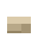 Cloth | Rags and fabric. Used for bandages and hazmat gear. | - | 4 | 7 | Crafted at Workbench; Sold at Mags' General Store; Dropped by Husk; Dropped by Scrapper; Dropped by Brute; Dropped by The Drowned; Dropped by Listener zealot; Reward: Beyond the Gates |
| Empty Bottle | Fill it at any water. Click water or a purifier with it selected. | - | 3 | 5 | Crafted by hand; Crafted at Stove; Sold at Mags' General Store; Sold at The Drip Apothecary; Sold at Reclaimers' Lodge; Reward: Clean Water |
| Hide | A thick hide. Cut it into strips for cloth. | - | 8 | 13 | Slaughtering a Twohead cow |
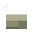 Hollowclaw Hide | Thick, scarred and hard to cut. Somebody will pay for it. | - | 60 | 96 | Dropped by The Hollowclaw |
| Human Skull | Somebody’s. Raiders collect them. So, it turns out, can you. | - | 6 | 10 | Dropped by The Cantor; Dropped by Gunner; Dropped by Scrapper; Dropped by Sapper; Dropped by Sniper; Dropped by Listener zealot; Dropped by Raid Chief; Dropped by Varro, the Kingpin |
| Iron ore | Raw ore. Needs smelting tech later. | - | 6 | 10 | Sold at Gannet Scrap; Dropped by Husk |
| Kit: Armour Bench | A packed up Armour Bench. Put it on the hotbar, then click to set it down. | - | 65 | 104 | Sold at Tinkers' Guildhall |
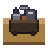 Kit: Weapon Bench | A packed up Weapon Bench. Put it on the hotbar, then click to set it down. | - | 70 | 112 | Sold at Tinkers' Guildhall |
| Metal plate | Smelted from scrap at a forge. | - | 9 | 15 | Crafted at Forge; Sold at Gannet Scrap; Sold at Tinkers' Guildhall; Dropped by Sapper; Dropped by Raid Chief; Dropped by Varro, the Kingpin; Dropped by The Hollowclaw; Dropped by The Wrack Mother; Reward: A Brute at the Wall; Reward: Scout the Deepcut |
| Sapling | Plant on open ground. Grows into a tree in a few days. | - | 4 | 7 | Sold at Stockyard and Seed |
| Scrap | Raw material. | - | 2 | 4 | Sold at Mags' General Store; Sold at Gannet Scrap; Dropped by Glowrat; Dropped by Ash Hound; Dropped by Scrapper; Dropped by Gunner; Dropped by Stalker; Dropped by Sapper; Dropped by Brute; Dropped by Sniper; Dropped by Wrack crab; Dropped by The Drowned; Reward: Hold the Gate |
| Steel Ingot | Smelted from iron ore. The basis of steel gear. | - | 24 | 39 | Crafted at Forge; Sold at Gannet Scrap (Hull reputation 3) |
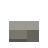 Stone | Raw material. | - | 2 | 4 | Sold at Mags' General Store; Sold at Gannet Scrap |
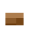 Wood | Raw material. | - | 2 | 4 | Sold at Mags' General Store |
Blueprints
Use a blueprint from your bag to learn its recipes for good. See Crafting for what each one unlocks.
| Item | Description | Effect | Value | Hull price | Where to get it |
|---|---|---|---|---|---|
 Blueprint: Anvil Techniques Blueprint: Anvil Techniques | Right-click to learn it. | - | 70 | 247 | Sold at Tinkers' Guildhall |
 Blueprint: Field Medicine Notes Blueprint: Field Medicine Notes | Right-click to learn it. | - | 70 | 247 | Sold at Tinkers' Guildhall |
 Blueprint: Firearms Primer Blueprint: Firearms Primer | Right-click to learn it. | - | 70 | 247 | Sold at Tinkers' Guildhall |
 Blueprint: Forge Plans Blueprint: Forge Plans | Right-click to learn it. | - | 70 | 247 | Sold at Tinkers' Guildhall |
 Blueprint: Fortifications Blueprint: Fortifications | Right-click to learn it. | - | 70 | 247 | Sold at Tinkers' Guildhall |
| Blueprint: Hazmat Patterns | Right-click to learn it. | - | 70 | 247 | Sold at Tinkers' Guildhall |
 Blueprint: Ironwork Manual Blueprint: Ironwork Manual | Right-click to learn it. | - | 70 | 247 | Sold at Tinkers' Guildhall |
 Blueprint: Kitchen Craft Blueprint: Kitchen Craft | Right-click to learn it. | - | 70 | 247 | Sold at Tinkers' Guildhall |
 Blueprint: Steelworking Blueprint: Steelworking | Right-click to learn it. | - | 70 | 247 | Sold at Tinkers' Guildhall |